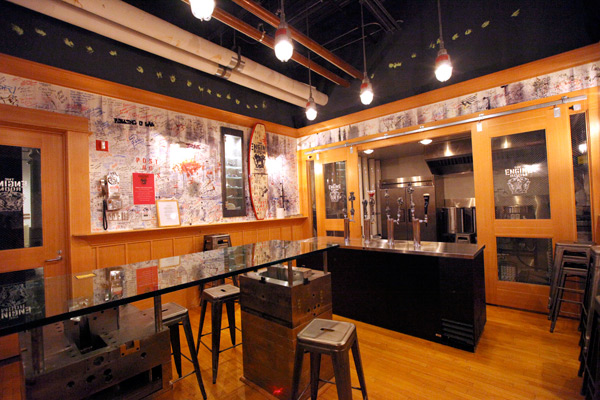

Oakley HQ: The Secret Bar
NOTCOT recently visited the Oakley HQ which happens to be down the road from my house. Driving up to the HQ is quite the experience as you make your way up the hill to the fortress passing tanks along the way. NOTCOT was taken to The Secret Bar which is hidden behind a panel in the offices.
When companies take efforts like this to live and breath the brand’s culture it can’t help but to spill over into every everything the public sees.